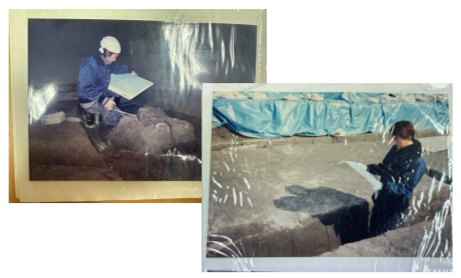

교수님의 대학시절의 이야기를 들어보았습니다.
'고고학'을 전공하신 이유는?
만화였어요. 일본 만화 중에 ‘마스터 키튼’이라는 만화를 알고 계신가요? 이 만화를 엄청 좋아했어서, 우라사와 나오키 라는 만화작가인데, “21세기 소년”으로 유명한 작가의 작품이죠. 그 작가의 이전 작품이에요. 고고학이 주제인 만화인데 유럽이나 그리스의 고고학, 그리고 박물관 같은 이야기를 보면서 고등학생 때 나도 이런 일을 해보고 싶다고 생각한 계기가 되었죠. 교토는 어느 대학이든 역사학과나 고고학과가 있어요. 그래서 나중에 내가 살아갈 곳에 가서 공부를 해보고 싶다고 생각했죠. 대학에 가고 나서 실제로 유적 발굴 현장에서 아르바이트를 하면서 일을 접해보기 시작했어요. 처음에는 아무것도 못 하기 때문에 곡괭이 같은 걸로 깡 깡 두들기면서 땅을 판다던지, 그냥 조금 속된 말로 노가다랑 다를 바가 없었어요. 손에 굳은살도 많이 박혔죠. 아무것도 못 하니까 처음에는 할 수 있는 게 그것밖에 없었거든요. 하지만 현장에서 공부를 계속하면서 크기를 측정한다든가, 스케치를 할 수 있게 된다든가, 점점 시간이 지나면서 여러가지 일들을 할 수 있게 되었어요. 처음에 만화를 보고 동경하게 되어서 현장에 갔지만 사실상 초반에는 그냥 노가다였던… 그런 느낌이죠. 그래도 남들이 쉽게 할 수 없는 일을 직접 겪어봄으로써 성장해 나가는 느낌이 좋았어요.
처음 어른이 되었을 때의 기분은 어떠셨는지?
한국에서처럼 1월 1일 오전 00시에 술, 담배가 전부 허용되는 것에 비해 저는 고등학교 시절에 이미 그런 걸 했던 적이 있어서 별로 크게 감흥이 없었어요. 한국처럼 군대에 가야하거나 하지도 않았기 때문에, 해방감이 있었다던지 자유로워졌다고 느끼진 않았어요. 성인이 되었다고는 해도, 21나 22에 졸업논문을 써야 하기 때문에 그게 끝나기 전에는 계속 공부만 했던 것 같아요. 그래서 좀 해방감을 느꼈다거나 자유로워졌다고 느낀 건 오히려 졸업한 뒤가 아닐까 싶어요.
인생에 있어 영향을 받은 인물이 있으신지?
저는 또 야구를 좋아하거든요. 야구를 자주 보는데, “노모 히데오”라는 선수가 있어요. 당시 한국의 박찬호랑 같은 시기에 메이저리그 LA다져스에 갔던 일본인 선수거든요. 그 사람이 메이저에 갔을 당시에 일본에서는 “일본인은 메이저리그에서 성공할 수 없다.”든가 “얼마 못 가서 돌아올 것이다.” 같은 분위기였는데, 거기에 반발하면서 노력해서 성공을 거둔 모습을 봤거든요. 일본 야구계의 선구자 같은 사람이죠. , 그 사람이 성공하는 모습을 보면서 “나도 저 사람처럼 해외에서 힘내보자” 라는 식으로 생각했던 것 같아요. 한국의 박찬호와 완전 같은 느낌이라고 보시면 돼요. 제일 먼저 메이저로 가서 성공한, 후배들에게 길을 만들어주는 훌륭한 사람이죠. 그리고 그 사람 이름도 정말 재밌어요. “히데오” 라는 이름이 “영웅”이랑 똑같은 한자를 쓰거든요. 말 그대로 당시 저에게 있어서 히어로였죠. 뭐 이런 부분도 일본어의 재미있는 부분이죠.
대학생활은 어떠셨는지?
대학생일 때에는 1학년부터 유적발굴 아르바이트를 해서 어느 정도 돈이 있었죠. 매일 8천엔 정도 받고, 밤에는 파칭코도 갔고, 그렇게 바로 집으로 가는 게 아니라 또 편의점에서 아르바이트를 했어요. 그래서 아침, 낮, 밤 전부 아르바이트를 했고 반대로 그 사이 빈 시간에 학교에 갔던 것 같아요. 당시의 대학교는 지금처럼 빡빡하지 않았거든요. 레포트만 제때 제출하고, 노트를 빌린다던지 해서 공부를 하고 시험을 치면 되는 거였어요. 그래서 남는 시간에 전부 아르바이트를 했어요. 거기다 유적발굴은 당시 제 학과 수업에 있어서도 도움이 되는 일이었거든요. 장래의 직장에도 도움이 될 것이라고 생각했고, 그래서 당시에는 오히려 지금보다도 자유로운 시간이었어요.
대학생활을 하면서 기억에 남는 추억은?
졸업논문과 관련된 에피소드가 가장 기억에 남아요. 당시에 컴퓨터를 처음 사서 컴퓨터로 쓰기 위해 전부 세팅을 해 뒀는데 원고 용지 세팅을 잘못해서 계속 쓰면 쓸수록 한 줄씩 지워지고 말았어요. 총 50장을 써야 했는데, 한줄을 쓸 때마다 이전의 행이 지워지니까 계속 쓰는데 끝이 안 나는 거죠. 페이지가 50장에서 안 끝난다는 걸 깨닫고, 교내 도서관에서 쓰려고 하니 도서관도 곧 폐관하겠다고 해서 전기는 점점 꺼져가고, 아주 아찔했죠. 학교가 문을 완전히 닫는 건 아닌데 전기가 전부 꺼져서 그냥 현관등 밑에서 썼어요. 마감일도 하필 그날 당일까지여서, 언제 내는지는 중요하지 않았어요. 다 써서 교수님 우편함에 넣어 두면 되는 거였거든요. 교수님은 이미 집에 가셨을 테니 밤에 다 써서 제출을 했죠. 시간이 기억은 안 나는데 꽤 늦은 새벽이었던 걸로 기억해요. 만약에 못 냈더라면 미달이니까 졸업을 못 하고 대학교에 다니는 기간이 늘어져 버렸겠죠. 인생이 거기서 또 바뀌었을 수도 있었어요. 아마 한국에는 오지 못했을 거라고 생각합니다. 반 년이 밀려버리니까요. 당시에는 아주 힘들었는데, 또 그래서 가장 기억에 남는 일일지도 모르겠네요. 당시에 제출을 하지 못했다면 아마 여러분 모두와 만나는 일도 없었을 거에요.
인생에서 가장 큰 터닝포인트
오토바이를 타다가 큰 사고가 난 적이 있어요. 거의 죽을 뻔 했어요. 대학교 4학년 때 일본에 있을 때의 일인데, 유적발굴 일을 하고 돌아가던 중, 밤이 늦었고 많이 어두워졌으니 빨리 집에 가려고 했는데 반대편에서 차가 오는 바람에 쾅 하고 부딪혔죠. 말 그래도 공중에 붕 떠서 ‘떨어진다’는 생각을 했어요. 그리고 얼굴부터 지면에 떨어졌죠. 당시에 진짜 주마등이 보였어요. 거짓말이 아니에요. 주변의 세계가 컬러가 아니라 흑백으로 보이고, 영화처럼 지금까지의 인생이 촤라락 지나가는 거죠. 모든 게 슬로우모션 처럼 느리게 흘러갔어요. 그래서 일단 손을 뻗었는데 늦었죠. 그대로 지면에 엎어졌어요. 다행히도 헬멧을 제대로 쓰고 있어서 머리가 조금 깨지긴 했지만 나머지는 크게 다치지 않았어요. 목도 다쳤죠. 그래도 예상보다는 크게 다치지는 않았지만, 문득 당시에 한 번 죽었다고 생각하면, 나머지는 자유롭게 살아도 되지 않을까?라는 생각을 해요. 힘든 일이 생기거나 할 때에도 뭐 죽는 것보다 낫지 않을까, 당시에 한 번 끝난 인생이라고 생각하면 괜찮아져요. 지금 잘 살아있으니까, 결국 살아돌아왔으니까 하고 낙천적인 사고방식을 갖게 된 것 같아요. 그냥 좋아하는 거, 하고 싶은 걸 하자고 생각한 계기가 되었죠.